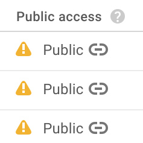

Google Cloud Storage の操作
概要
このラボでは、仮想マシンを起動してセキュリティを構成し、リモートでアクセスします。
学習内容
このラボの内容:
-
必要なアクセスとセキュリティを備えた Compute Engine インスタンスを作成する
-
インスタンスに SSH 接続する
-
ソフトウェア パッケージ Git（ソースコードのバージョン管理用）をインストールする
-
Compute Engine インスタンスにデータを取り込む
-
Compute Engine インスタンスでデータを変換する
-
変換したデータを Cloud Storage に保存する
-
Cloud Storage のデータをウェブに公開する
はじめに
このラボでは、仮想マシンを起動して API アクセスを構成し、リモートでログインします。このような低レベルで Compute Engine インスタンスを操作するケースは少ないと思われますが、GCP の基礎がわかっていれば、トラブルシューティング時に役に立つ可能性があります。
さらに、取り込み - 変換 - 公開のデータ処理パイプラインの手順を手動で実行します。
- Compute Engine インスタンスにデータを取り込む
- Compute Engine インスタンスでデータを変換する
- 変換したデータを Cloud Storage に保存する
- Cloud Storage のデータをウェブに公開する
アメリカ地質調査所（USGS）によって公開されているリアルタイムの地震データを使用します。
タスク 1: 必要な API アクセスを備えた Compute Engine インスタンスを作成する
Compute Engine のインスタンスを作成するには:
-
GCP Console の[ナビゲーション メニュー]（ ）で、[Compute Engine] をクリックします。
）で、[Compute Engine] をクリックします。
-
[作成] をクリックして、フォームが読み込まれるまで待機します。表示されたフォーム上のオプションの一部を変更する必要があります。
-
[名前] はデフォルト値のままにし、[リージョン] で us-central1、[ゾーン] で us-central1-a を選択します。
-
[ID と API へのアクセス] の [アクセス スコープ] で、[すべての Cloud API に完全アクセス権を許可] を選択します。

-
[作成] をクリックします。
タスク 2: インスタンスに SSH 接続する
インスタンスが作成されたら、リモートで Secure Shell（SSH）を使用して Compute Engine インスタンスにアクセスできます。
-
作成したインスタンスが利用可能になったら、[SSH] をクリックします。

注: SSH キーは自動的に転送されるため、ブラウザから直接 SSH 接続することができ、追加のソフトウェアを必要としません。
-
起動した Compute Engine インスタンスに関する情報を表示するには、SSH ターミナルで次のコマンドを入力します。
cat /proc/cpuinfo
タスク 3: ソフトウェアをインストールし、USGS データを取り込む
-
SSH ターミナルで、次のコマンドを入力します。
sudo apt-get update
sudo apt-get -y -qq install git
-
Git がインストールされたことを確認します。
git --version
-
コマンドラインで次のコマンドを入力します。
git clone https://github.com/GoogleCloudPlatform/training-data-analyst
これにより、github からコードがダウンロードされます。
注: git で認証エラーになった場合は、github URL に入力ミスがあることが考えられます。上記のコードをコピーして貼り付けてください。
-
このラボに対応するフォルダに移動します。
cd training-data-analyst/CPB100/lab2b
-
less コマンドを使用して、取り込みコードを確認します。
less ingest.sh
less コマンドを使用すると、ファイルを表示できます（スペースキーを押すと下へスクロール、b で 1 ページ戻り、q で終了します）。
プログラム ingest.sh により、過去 7 日間の地震情報のデータセットがアメリカ地質調査所からダウンロードされます。ファイルのダウンロード先は、ディスクと Cloud Storage のどちらですか。
-
ingest コードを実行します。
bash ingest.sh
-
データがダウンロードされていることを確認します。
head earthquakes.csv
head コマンドでは、そのファイルの先頭の数行が表示されます。
タスク 4: データを変換する
Python プログラムを使用して、未加工データを地震活動のマップに変換します。
変換コードについては、以下のノートブックで詳しく説明されています。
https://github.com/GoogleCloudPlatform/datalab-samples/blob/master/basemap/earthquakes.ipynb
この説明を読むと、何をするための変換コードかを理解できます。このノートブック自体は Datalab に書き込まれています。Datalab は GCP プロダクトで、このコースで使用方法を学習します。
-
最初に、必要な Python パッケージを Compute Engine インスタンスにインストールします。SSH ターミナルで次のコマンドを入力します。
bash install_missing.sh
-
プロンプトが表示されたら、「Y」と入力して Enter キーを押します。
-
変換コードを実行します。
python3 transform.py
-
ディレクトリの内容を表示すると、新しい画像ファイルがあるのがわかります。
ls -l
タスク 5: バケットを作成する
GCP Console を使用してバケットを作成します。
-
GCP Console のナビゲーション メニュー（）で、[Storage] をクリックします。
-
[バケットを作成] をクリックします。
-
[名前] にプロジェクト ID を入力し、[作成] をクリックします。プロジェクト ID を探すには、GCP Console のトップメニューでプロジェクトをクリックし、選択したプロジェクトの ID の値をコピーします。
使用するバケットの名前をメモしておきます。このラボでは、これ以降 <YOUR-BUCKET> を自分のバケット名に置き換えてください。
タスク 6: データを保存する
変換前と変換後のデータを Cloud Storage に保存するには:
-
SSH ターミナルで次のコマンドを入力します。<YOUR-BUCKET> は、前のタスクで作成したバケットの名前に置き換えてください。
gsutil cp earthquakes.* gs://<YOUR-BUCKET>/earthquakes/
-
GCP Console でバケット名をクリックすると、earthquakes フォルダに新しいファイルが 3 つ追加されたことがわかります（必要に応じて [バケットを更新] をクリックしてください）。
タスク 7: Cloud Storage ファイルをウェブに公開する
次のコマンドを使用して Cloud Storage ファイルをウェブに公開します。
gsutil acl ch -u AllUsers:R gs://<YOUR-BUCKET>/earthquakes/*
earthquakes.htm の [公開リンク] をクリックします。

公開された Cloud Storage ファイルの URL は何ですか。バケット名とコンテンツとはどのような関連性がありますか。
Cloud Storage にデータを公開する利点は何ですか。
マニュアルの最終更新日: 2018 年 10 月 8 日
ラボの最終テスト日: 2018 年 10 月 8 日